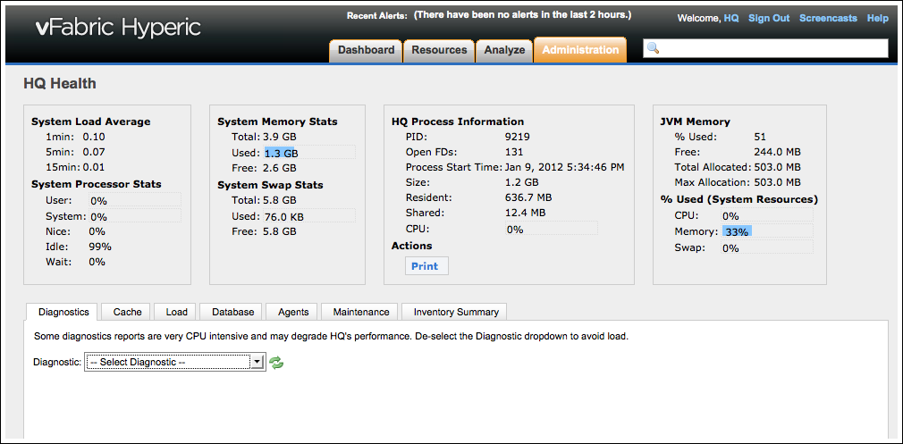

HQ Health
Topics marked with * relate to features available only in vFabric Hyperic.
The HQ Health page, accessible to Hyperic adimistrators on the "Plugins" section of the Administration tab of the Hyperic userface, displays real-time Hyperic Server diagnostics. HQ Health is helps Hyperic Support troubleshoot problems; it is not intended for customer use.

Key Statistics
The top of the screen displays standard health statistics for a server.
Diagnostics Tab
This tab contains the information that Hyperic prints to log files every 15 minutes. You can choose these diagnostics from the drop-down list:
- Agent Synchronizer — Lists the Hyperic Agents (up to 10 of them) that have done the most metric scheduling, unscheduling, and plugin synchronization jobs since last Hyperic Server restart. The number of jobs of each type that the agent has run is shown. (For information about plugin synchronization, see Plugin Deployment and Management in vFabric Hyperic Administration.)
- Batch Aggregate AvailabilityInserter — Status of the queue that contains resource availability data to be stored in the database.
- Batch Aggregate DataInserter — Status of the queue of that contains resource metrics to be stored in the Hyperic database.
- EhCache — Size, hits, and misses for Hyperic cache regions.
- Enabled Metrics Not Coming In — Lists up to 10 platforms for which enabled metrics (for the platform, or resources running on the platform) were not reported during the last 60 minutes. For each such platform, the number of unreported metrics is listed, along with the internal ID for the metric, metric name (if known), the internal ID for the resource with the unreported metric, and the resource name. Note that only metrics for resources that (1) have been configured for monitoring, if necessary, and (2) are currently available, will be included in this diagnostic.
Report generated at 1/13/12 10:32:20 AM Top 10 available platforms with enabled metrics not reported in for 60 minutes (by platform hierarchy) ------------------------------------------------------------------------ fqdn=goku.localdomain (5 not collecting): mid=80097, name=UNKNOWN, resid=26068, resname=goku Coldfusion 7.x mid=80098, name=UNKNOWN, resid=26068, resname=goku Coldfusion 7.x mid=80100, name=UNKNOWN, resid=26068, resname=goku Coldfusion 7.x mid=80104, name=UNKNOWN, resid=26068, resname=goku Coldfusion 7.x mid=80105, name=UNKNOWN, resid=26068, resname=goku Coldfusion 7.x fqdn=w1-lotor.local (4 not collecting): mid=40694, name=UNKNOWN, resid=15573, resname=w1-lotor Solaris Network Interface lo0 (loopback) mid=40696, name=UNKNOWN, resid=15573, resname=w1-lotor Solaris Network Interface lo0 (loopback) mid=40514, name=UNKNOWN, resid=15558, resname=w1-lotor Sendmail 8.x mid=40515, name=UNKNOWN, resid=15558, resname=w1-lotor Sendmail 8.x fqdn=w1-zarkon.local (2 not collecting): mid=61944, name=UNKNOWN, resid=22441, resname=w1-zarkon Solaris Network Interface lo0 (loopback) mid=61946, name=UNKNOWN, resid=22441, resname=w1-zarkon Solaris Network Interface lo0 (loopback)
- Metric Reports Stats — A running average of how fast metrics are being pushed into the database.
- ZEvents — Status of the internal BUS.
Cache Tab
This tab presents the detailed status of Hyperic cache regions:
- Total Memory Usage (of all cached objects)
- For each region:
- Size
- Hits
- Misses,
- Limit
- Limit
- Memory Usage
For information about cache settings, see Configure HQ Cache Settings for Improved Performance.
Load Tab
Current load on Hyperic Server, including:
- Metrics collected per minute
- Platforms
- CPUs
- Agents
- Active Agents
- Servers
- Services
- Applications
- Roles
- Users
- Active Alert Defs
- Resources
- Resource Types
- Groups
- Escalations
- Active Escalations
Database Tab
The Database tab contains an Actions pulldown menu with database cleanup commands, and a Query pulldown with queries that return information about resources in the auto-inventory queue and resources that are orphaned.
You can perform the following database cleanup commands from the Actions pulldown:
- Purge AIQ Data — Deletes the contents of the auto-discovery queue. This is useful if the queue contains resources that for some reason cannot be imported. Deleting resources from the queue will cause the agent to rediscover them.
- Purge Stalled Executions — Deletes escalations that are stalled.
You can run the following queries from the Queries pulldown:
- AutoInventory IPs
- AutoInventory Platforms
- AutoInventory Servers
- Database Character Set
- Orphaned Alert Definition Count
- Orphaned Audit Count
- Orphaned (Stalled) Escalations
- Orphaned Group Count (deprecated)
- Orphaned Platform Count
- Orphaned Resource Group Count
- Orphaned Resource Count (deprecated)
- Orphaned Server Count
- Orphaned Service Count
- Postgres Locks
- Postgres Activity
- Active But Disabled Resource Alert Defs
- Database Version Information
Agents Tab
For each Hyperic Agent connected to the Hyperic Server, the following information is listed:
- FQDN — of the machine it runs on; this is the identifier of the monitored platform in Hyperic.
- Address — The IP address upon which the agent listens for server communications.
- Port — The port on the agent's listen address upon which it listens for server communications. By default, the listen port is 2144. The value "-1" indicates that the agent is configured for unidirectional communications.
- Version — Hyperic version
- Bundle Version
- Creation Time — When the platform where the agent runs was first added to Hyperic inventory.
- # Platforms — The number of platforms the agent is monitoring. Typically this value is "1", indicated that the agent is monitoring only the platform where it runs. The value is greater, if the agent is also monitoring an an agentless device, for instance an SNMP device.
- # Metrics — This is the number of metrics the agent collects. Hyperic recommends balancing the metric collection load across agents. For example, don't use a single agent to monitor every SNMP devices in your network - this would constitute a single point of failure, and the metric load might downgrade the performance of other services running on the host.
- Time Offset (ms) — The system time offset between Hyperic Server and Hyperic Agent. Time synchronisation on Hyperic Server and Hyperic Agents is very important to determine the availability of platforms and services correctly. Single or double digit values are okay. Higher values indicate a problem. In this case, set up NTP-daemons on your server and agent hosts. You can monitor the NTP-daemons and set an alert on the offset value
- License count
Maintenance Tab
The Maintenance tab has commands for listing and removing orphaned resources.
| About Orphaned Objects in Cache Interrupted database updates can result in orphaned rows in the Hyperic database. Orphaned rows can cause Hyperic exceptions. For example, if the Hyperic database contains alert definitions that are no longer associated with a resource, trying to edit edit a resource type alert can result in a stack trace similar to: org.hyperic.hq.events.AlertConditionCreateException: org.hyperic.hq.measurement.MeasurementNotFoundException: No measurement found for 10288 with template 33434 at org.hyperic.hq.bizapp.server.session.EventsBossImpl.updateAlertDefinition(EventsBossImpl.java:887) |
- Cleanup Orphaned Nodes — Removes orphaned resources from the Hyperic database. For example, a service whose relationships to its metadata or related resources are broken.
- List Orphaned Nodes — List orphaned resources in the Hyperic database.
| You can see the number of orphaned resources of a particular type by running the queries available on the "Database" tab of HQ Health. |
Inventory Summary Tab
The Inventory Summary tab lists the resource types in inventory and the number of each type.